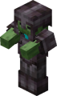

Aww, man
Tartalomjegyzék:
- Irányítás
- Inventory
- Barkácsolás
- Páncél/eszköz anyagok
Irányítás:

| W | előre mozgás |
| A | balra mozgás |
| S | hátra mozgás |
| D | jobbra mozgás |
| Space | ugrás |
| Left Shift | gugolás |
| E | inventory megnyitása / bezárása |
| Jobb click | blockok letétele, interakció, armor gyors felvétele/cseréje |
| T | chat megnyitása (commandok) |
| Bal click | Blockok törése, sebzés |
| F | tárgyak bal/jobb kéz közötti gyors cseréje |
| F3 | xyz koordináták és rengeteg más adat megtekintése |
| F1 | hotbar elrejtése |
| F2 | képernyőkép készitése |
| F3+F4 | gamemode gyors váltása (csak ha csalások engedélyezve) |
| F5 | perspektíva váltása (külső, belső, elülső) |
| L | achievement menü megjelenítése |
| Ctrl+W | futás (csak ameddig a hungerbar nincs 4🍗 alatt) |
Inventory:

- Amikor megnyitod az inventory-d, akkor látod bal oldalon a karaktered miniben,
mellette pedig 4 slot-ot, ahova páncéldarabokat lehet berakni és viselni. - A jobb felső sarokban az alap barkácsoló része az inventory-nak, ott tudsz
barkácsolni, mielőtt még lenne barkácsasztalod, egy 2x2-es dobozban kis
receptek alapján. - A karaktered bal oldalán lévő slot a karaktered bal keze, ide lehet bármilyen
tárgyat rakni (java edition) és a karaktered a bal kezében tartja, ezt leginkább
pajzsokat, totem of undying-okat, kaját és OptiFine
használataesetén világító tárgyakat szoktak itt tartani. - A barkácsoló rész alatt láthatsz egy zöld könyvet, az megjeleníti az összes készíthető
tárgyat, hozzávalóit, receptjét és hogy melyik tárgyak hiányoznak az elkészítéséhez
(kivéve ha be van állítva a korlátozott barkácsolás). - Azán ott van a 3x9 nagyságú hely, ahol tárolhatsz bármilyen itemeket, amik
általában 64 vagy 16 vagy 1 ugyanolyan tárgy fér egy slot-ba. - És még ott van az 1x9-es sor legalul, az a hotbar, amit az inventory
megnyitása nélkül is látsz. - Végsőnek vannak az inventory-ban használható egér és/vagy billentyű
shorcut-ok, amik segítenek az inventory könnyebb rendezéséhez vagy a gyorsabb
multi-tárgykészítéshez, amiknek itt
van a linkje, és ha esetleg más kihagyott dolgok.
Barkácsolás:

Miután találtál bármilyen fát a közeledben és hosszan nyomva a
bal egérgombot, kiütötted, akkor kapsz farönköt, amit ha
beteszel az inventory-dban lévő 2x2-es barkácsoló részbe,
akkor mutatja hogy abból készíthetsz fadeszkákat, botokat,
barkácsasztalt, a kis könyv segítségével.
Miután megvan a barkácsasztal és letetted, akkor ott is
találsz egy barkácsoló részt, de ez már 3x3-as, amivel már
minden barkácsolható tárgyat elkészíthetsz már, és az ott is
megtalálható kis könyv alapján készíthetsz már rengeteg dolgot,
ezek között eszközöket.
Ezek az eszközök (a sebzés nagysága,a blokkok kiütésének gyorsasága és a durability-je az eszköz anyagától függ):
- Kard - ezzel lehet a leghatékonyabban sebezni a mobokat, mert ezeknek a legtöbb a
sebzés/másodperc-ük, azaz ennek nem a legnagyobb a sebzése, de a cooldown-jával
ezzel lehet a legtöbb sebzést elérni egy adott idő alatt. - Balta - ezzel gyorsabban lehet a fából készült blokkokat kiütni.
- Ásó - ezzel lehet gyorsabban kiásni a lazább szerkezetű blockokat, mint
a föld, homok, sóder, agyag stb. - Csákány - ezzel tudod kiütni a kő/érc alapú blokkokat hogy a blokk által dobott tárgyat megkapd,
a csákány anyagától függ hogy mit tud kiütni. - Kapa - ezzel tudod megkapálni a földet hogy ültetni tudj, és pár blockot
ezzel gyorsabban tudsz kiütni.
Az eszközöknek van durability-je, ami azt jelenti hogy hány blockot tud kiütni mielőtt eltörik
és eltűnik az inventory-ból, ezen kívül van az attack cooldown, sebzés is, és ezeket az
F3+H-val tudod megjeleníteni és a kurzort az eszköz fölött jelennek meg.
Egyéb hasznos blokkok:
- Ágy - ebben át tudod aludni az éjszakát és amíg nincs mellette és rajta
2 blokk egymás felett, addig ott életsz újra (spawnpoint),
és csak addig ,amíg le van rakva és rákantittottál, ha kiütöd,
akkor eltűnik a spawnpoint-od. - Láda - ahogy gondolhattad, egy láda... és azt tesz amit egy láda,
de ha 2 ládát raksz egymás mellé, akkor kombinálódik
a ládák inventory-ja. - Üllő - az üllővel tudsz javítani páncélokat és mindenféle eszközt.
Tudsz 2, nem muszály ugyanolyan, de ugyanazokat a tárgyakat kombinálni,
hogy a durability-jük összeadódjon, és enchantokat is lehet
rájuk tenni, meg kombinálni, de ez itt túl komplikált, ezért itt
nézheted meg jobban. - Kemencék:
- Kemence (alap): Ez a kemence 8 zűzottkőből készíthető el a barkácsasztalban, körben téve,
a zúzottkövet pedig kő csákánnyal való kiütésekor kapod. Mindent ki tud sütni ami
kisüthető/megsüthető. - Füstölő: Ez a kemence fajta csak a megsüthető ételeket tudja megsütni... mert egy füstölő,
ahol nem érceket meg követ szoktunk füstölni..., de sokkal gyorsabban süti meg őket mint egy
normális kemence. - Olvasztókemence: Az olvasztókemence csakis érceket tud kisütni rudakra,
fém páncélokat rögökre (kivéve a lánc) és a netherite-ot netherite scrap-vé, de ez is sokkal
gyorsabban csinálja ezt ,mint egy átlagos kemence.
Az alap kemencében égethető tárgyakról és a tüzelőanyagokról itt található
minden egyéb információ. - Kemence (alap): Ez a kemence 8 zűzottkőből készíthető el a barkácsasztalban, körben téve,
Páncél/eszköz "szintek":
Jelenleg a játékban 6 szint van az eszközöknél és 5 a páncéloknál, az eszközöknél fa és kő
variáns van ami a páncéloknál nincs, a páncéloknál pedig a lánc variáns nincs az eszközöknél.
A szintjük meghatározza az eszközök, páncélok bányászati szintjét, durability-jét,
bányászati sebességének szorzóját, sebzés bónuszát, enchantolhatóságát és a javító tárgyát.
Eszközök:
| Szint neve |
Bányász. szint |
Durability | Bányász. sebesség száma |
Sebzés bónusz |
Enchantol- hatóság |
Javító tárgy |
|---|---|---|---|---|---|---|
| Fa | 0 | 59 | 2 | 0 | 15 | Deszkák |
| Kő | 1 | 131 | 4 | 1 | 5 | |
| Vas | 2 | 250 | 6 | 2 | 14 | Vasrúd |
| Gyémánt | 3 | 1561 | 8 | 3 | 10 | Gyémánt |
| Netherite | 4 | 2031 | 6 | 2 | 14 | Netherite rúd |
| Arany | 0 | 32 | 12 | 0 | 22 | Aranyrúd |
Páncélok:
A páncélok a legtöbb sebzést csökkentik a játékban, lehet barkácsasztalban |
 |